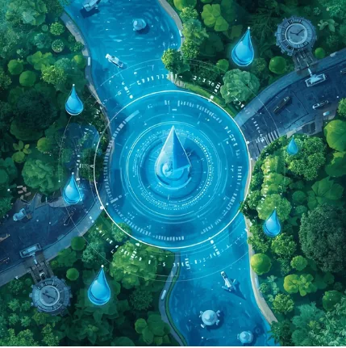
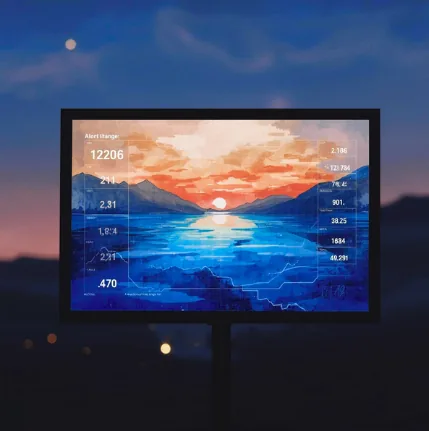
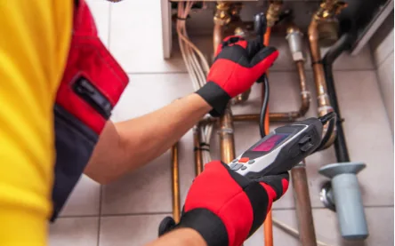
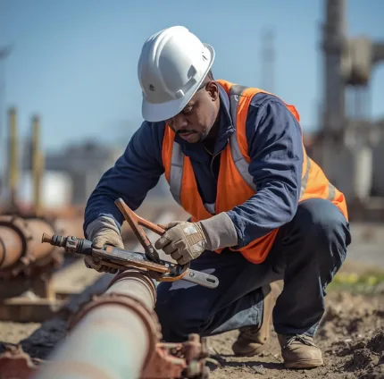

Advanced technology for sustainable water management
Real-time monitoring and intelligent control for optimal water distribution
Inefficient water distribution leads to waste and higher costs.
Real-time monitoring and automated control systems optimize water flow across your entire network, providing instant visibility and control.
Reduced water loss and operational costs with improved system reliability.

Predictive insights that transform data into actionable intelligence

Lack of actionable insights from water system data.
Advanced machine learning models predict issues and recommend actions before problems occur, turning your data into a strategic asset.
Proactive maintenance and optimized water usage patterns.
From detection to repair, our integrated solutions provide end-to-end water network management that protects revenue and ensures continuous service delivery.
Advanced sensing technology for early issue identification
Hidden leaks and asset deterioration lead to catastrophic failures and revenue loss.
Identify hidden leaks and asset deterioration early using advanced sensing technologies — satellite detection, acoustic sensors, and inline inspection — before failures occur.
Prevent catastrophic failures and protect revenue through early intervention.

Live repairs with zero shutdowns and continuous service

Traditional repairs require system shutdowns, disrupting water supply and causing revenue loss.
Live repairs with zero shutdowns. Maintain continuous water supply while performing critical pipeline repairs — no system restarts, no disruption.
50% reduction in NRW, revenue protection, and enhanced network efficiency.
Transform static infrastructure into intelligent, connected assets
Static infrastructure data limits operational intelligence and maintenance efficiency.
Transform static infrastructure into intelligent, connected assets by combining engineering data with interactive 3D models and seamless CMMS/EAM integration.
Enhanced maintenance workflows and improved operational decision-making.
Our comprehensive approach to non-revenue water reduction combines proven methodologies with cutting-edge technology to protect your bottom line.
Proven methodologies for quantifying and reducing non-revenue water
Non-revenue water drains resources and undermines financial sustainability.
Quantify, analyse, and reduce non-revenue water using proven water balance methodologies and DMA analytics with targeted intervention strategies.
Accurate water balance analysis, DMA-level loss visibility, and measurable revenue recovery.
Partner with OneWater for intelligent, sustainable water management